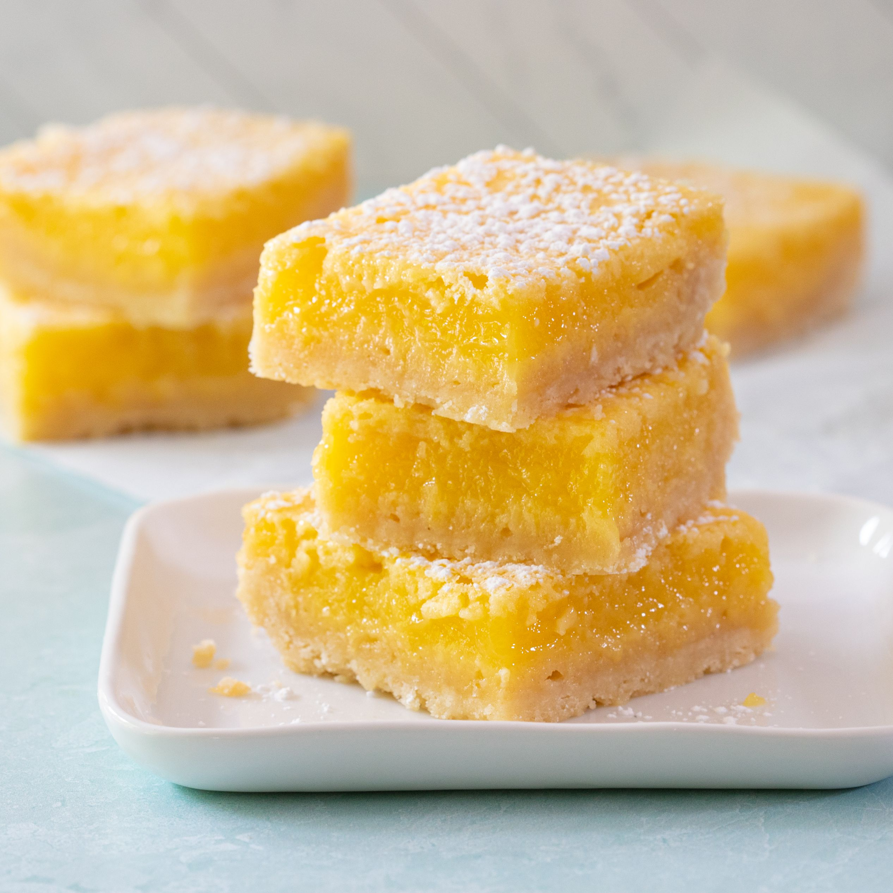

Lemon Bars

Easy Lemon Bars
As a child, I was not a fan of lemon desserts. It was either vanilla or chocolate or nothing. But, as I got older, I really began to appreciate lemon desserts
There is something very satisfying to a lemon bar. The shortbread base and the tart, gooey lemon custard just make a perfect bite. This recipe makes a big batch. You can half or quarter the recipe if you'd like.
My suggestion, though, is to bake the full recipe and freeze what you don't eat. Then, grab some vanilla ice cream, chop up some of the lemon bars and combine for an even more perfect dessert.
Ingredients
Crust
- 3 cups AP Flour
- 3/4 cups Powdered Sugar
- 12 oz Unsalted Butter, softened
Filling
- 5 cups Sugar
- 1 cup AP Flour
- 2 tsp Baking Powder
- Zest of 4 Lemons
- 3/4 cups Lemon Juice
- 3/4 cups Lime Juice
- 12 lrg Eggs
Steps
- Pre-heat the oven to 350 degrees F (315 degrees F in convection oven)
- Mix the dry ingredients for the crust (flour and powdered sugar) together in a medium bowl. Cut in the butter until it is crumbly like sand
- Prepare the pan. Grease a cookie sheet and pan extender. Pour the crumbled crust into the pan. Using your fingers, press into the pan.
- Bake for 15 minutes or till golden.
- While the crust is baking, in a same bowl as before, whisk the flour, sugar, baking powder, and lemon zest.
- In a separate bowl (I like to use a large measuring glass) whisk the eggs, lemon juice, and lime juice till combined.Then mix the wet ingredients into the dry ingredients.
- Pour the custard base directly into the pan with the baked crust.
- Bake for 40 minutes, turning halfway. The lemon custard should be mostly set but still jiggly.
- Wait to cut once fully cooled (if you can!)
Home